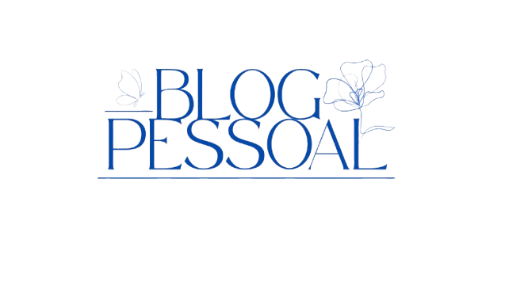

| Página Inicial | Sobre nós | |
|  | |
Sobre a universidade.A UNES é uma instituição de ensino superior dedicada à formação de profissionais qualificados e ao incentivo à pesquisa e à inovação. Com uma proposta educacional voltada para a excelência acadêmica e o compromisso social, a universidade oferece cursos de graduação, pós-graduação e extensão em diversas áreas do conhecimento. Seu ambiente acadêmico promove o desenvolvimento do pensamento crítico, a produção científica e a preparação dos alunos para os desafios do mundo contemporâneo. A UNES busca, por meio de uma abordagem humanista e interdisciplinar, formar cidadãos conscientes, éticos e comprometidos com a transformação da sociedade. Valorizando a integração entre ensino, pesquisa e extensão, a universidade estabelece parcerias com instituições públicas e privadas, ampliando as oportunidades de aprendizado e inserção no mercado de trabalho. Além disso, investe constantemente em infraestrutura, tecnologia e qualificação docente, garantindo um ambiente propício ao crescimento pessoal e profissional de seus estudantes. |
|
| Todos os direitos reservados. | |